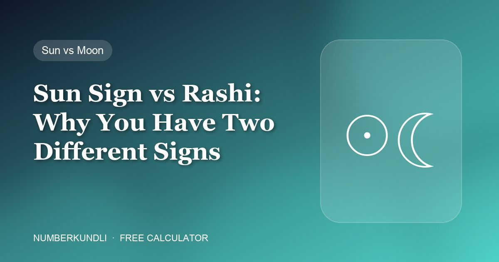

Sun Sign vs Rashi: Why You Have Two Different Signs

A magazine tells you that you are a Sagittarius. Your family priest says you are a Vrishchik (Scorpio). Neither is wrong. They are using two different zodiacs and two different celestial bodies, and in India most people end up holding both without ever being told why they differ.
The two systems
| Western sun sign | Vedic rashi | |
|---|---|---|
| Based on | The Sun's position | The Moon's position |
| Zodiac used | Tropical — fixed to the seasons | Sidereal — fixed to the stars |
| Needs | Date of birth | Date, exact time and place |
| Changes every | About a month | About 2¼ days |
| Describes | Outward personality, ego, drive | Mind, emotion, instinct |
| Used by | Horoscope columns worldwide | Indian astrology, matchmaking, muhurat |
Why the answers differ
Two separate reasons, and they stack.
First, different bodies. One tracks the Sun, the other the Moon. The Moon moves through a whole sign in about two and a quarter days, which is why rashi needs your birth time — a morning and an evening birth on the same date can land in different rashis.
Second, different zodiacs. The tropical zodiac is pinned to the equinoxes; the sidereal is pinned to the actual constellations. Because the Earth wobbles on its axis, the two have drifted apart over roughly two thousand years — currently by about 24 degrees, which is nearly one whole sign. This drift is called ayanamsa, and it is why a Western Sagittarius so often turns out to be a Vedic Scorpio.
Which one should you use?
Whichever matches the tradition you are actually following.
- Reading a horoscope column, or anything Western? Sun sign. That is what it was written for.
- Doing anything Indian — kundli matching, naming a baby by nakshatra syllable, choosing a muhurat, a temple ritual? Rashi. Western sun signs have no role there at all.
Mixing them produces nonsense: reading a Western Leo horoscope while using a Vedic Cancer rashi for your wedding date is two systems answering two different questions.
How to find your rashi
You cannot work it out from your date alone — that is the honest answer, and the reason this site's zodiac calculator gives the sun sign and says plainly that it is not your rashi. Rashi requires your exact birth time and place and an ephemeris. Any free "rashi calculator" that asks only for your date of birth is giving you a sun sign with an Indian name on it.
For a real one you need a proper kundli, which means a Vedic astrologer or software that takes time and place. Your family may already have your janam kundli from birth.
And nakshatra, while we are here
Vedic astrology subdivides further: 27 nakshatras, each about 13 degrees of the moon's path. This is where the starting syllable for a baby's name comes from — Chu, Che, Cho, La and so on. It is also time-dependent. Families often confuse the nakshatra syllable with a numerology rule; the difference is explained in this guide, and the naming method in this one.
Where numerology sits
Outside both. Your Birth and Destiny numbers come from the calendar date alone — no time, no place, no zodiac. That is why they are the same whichever astrological system you follow, and why everything on this site is built on them rather than on a sign. This guide covers how a sign can still be read alongside them, through the ruling planet.
Frequently asked questions
Why is my rashi different from my zodiac sign?
Two reasons at once: rashi uses the Moon rather than the Sun, and Vedic astrology uses the sidereal zodiac rather than the tropical one. The two zodiacs have drifted nearly a full sign apart.
Can I find my rashi from my date of birth alone?
No. The Moon changes sign roughly every two and a quarter days, so you need your exact birth time and place. Any calculator asking only for a date is giving you a sun sign.
Which is more accurate?
Neither is testable, so accuracy is not the right question. Use whichever belongs to the tradition you are following, and do not mix them.
Does my numerology number change with the system?
No. Birth and Destiny numbers come from the calendar date alone, so they are identical whichever astrology you follow.